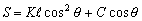

視距計算(II)
編寫日期: 2006年3月22日

K and C are stadia constants, θ is angle of elevation
This equation is used to determine the horizontal distance from the transit to the leveling rod by reading the angle of elevation when a transit is used to read the length of the leveling rod between the upper and lower stadia lines.
Example:
Determine the horizontal distance between two points when the length on the leveling rod between the upper and lower stadia lines is 0.865m, and the angle of elevation is θ=+4. Note that K=100 and C=0.
Press 23 FMLA 100 RUN 0.865 RUN 0 RUN 4 RUN (Read-out: S=86.07909397)